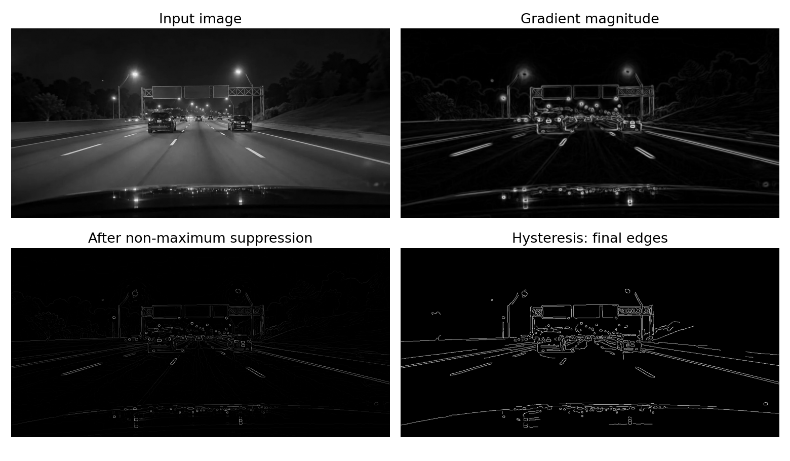

Homework 05: Edge Detection with Canny
Total: 5 points
Submission: Gradescope Programming Assignment
Work: Individual
Objective
Build the edge-detection pipeline from Lecture 6: compute image gradients, thin the responses, and connect weak responses to strong ones. Apply the pipeline to a dashcam image to reveal the edges of road-lane markings. Inspect how smoothing and threshold choices change the final edge map.
Use the course cv Conda environment and OpenCV (cv2). Do not use generative AI to solve this homework. You may refer to the lecture examples and adapt them to the functions below.
Starter files
Download both files into the same folder:

Complete only these four functions in hw05.py:
compute_gradients(image, sigma)
nonmaximum_suppression(magnitude, angle)
hysteresis_threshold(response, low, high)
detect_edges(image, sigma, low, high)The Gaussian derivative kernels, interpolation helper, image loading, and plotting are provided. Leave that code unchanged. Keep the function names and arguments as supplied.
Tools and conventions
- Keep imports to
cv2,numpy,matplotlib, and the standard-library modules. - Use
cv2.filter2D()for the derivative filtering in Part 1. Use the supplied kernels directly, with no extra blur, kernel flipping, normalization, or resizing. - Do not use
cv2.Canny()or another complete edge detector in your solution. You are implementing its main stages. OpenCV filtering, interpolation, and connected-component functions are allowed. - The loader provides a two-dimensional
float32grayscale image in[0, 1]. Parts 1 and 2 return same-sizefloat32arrays. Parts 3 and 4 return same-size Boolean arrays, withTruefor an edge andFalseotherwise. - Do not modify input arrays. Do not normalize or clip intermediate results. The provided plotting code handles display scaling.
- Support odd, even, and non-square images. Graded images have at least 3 rows and 3 columns; standalone hysteresis tests may also use a single row or column.
- The grader supplies valid inputs: positive finite
sigma, finite nonnegative magnitudes/responses, matching array shapes, and finite thresholds satisfying0 <= low <= high. You do not need to write input-validation code.
Part 1 — Compute image gradients
Complete:
def compute_gradients(image, sigma):
...- Call
gaussian_derivative_kernels(sigma)to get the supplied x and y derivative filters,hxandhy. - Filter the original image with each kernel to obtain
IxandIy. - Compute gradient magnitude and direction:
\[ M = \sqrt{I_x^2 + I_y^2}, \qquad \theta = \operatorname{atan2}(I_y, I_x). \]
Return (Ix, Iy, magnitude, angle) in this order.
Hints:
- There is no kernel construction to implement. The provided helper combines smoothing and differentiation in each filter.
- Use
cv2.filter2D(image, -1, hx, borderType=cv2.BORDER_REFLECT_101)and the analogous call forhy. Because the input isfloat32,-1preserves floating-point output and negative derivatives. - Compute magnitude with
np.sqrt(Ix**2 + Iy**2)and angle withnp.arctan2(Iy, Ix). Keep angles in radians for Part 2. - x increases toward the right; y increases downward. An image that gets brighter toward the right should have positive
Ixin its interior. A decreasing-intensity ramp should have negativeIx. - Keep the original numerical scale. Do not use
cv2.convertScaleAbs()on derivatives. - Gradient direction is undefined where magnitude is zero. Those angle values are not graded.
Part 2 — Thin the responses
Complete:
def nonmaximum_suppression(magnitude, angle):
...The gradient points across the edge. Compare the magnitude at each pixel with the two values one pixel away along that direction.
The supplied helper does the coordinate construction and interpolation for you:
forward, backward = sample_along_gradient(magnitude, angle)It uses OpenCV to sample at (x + cos(angle), y + sin(angle)) and (x - cos(angle), y - sin(angle)). You do not need to implement interpolation or round directions to angle bins.
Keep a pixel’s original magnitude only when both conditions hold:
magnitude > forward
magnitude >= backwardSet all other pixels to zero. Then set the first/last row and first/last column to zero. Return a new float32 array.
Hints:
- Combine the two conditions using NumPy
&, with parentheses around each comparison. np.where(condition, magnitude, 0)selects retained magnitudes and zeros.- The strict comparison on the forward side resolves equal-valued ties. Use this exact rule so your output matches the reference.
result[[0, -1], :] = 0clears the first and last rows. Use the analogous indexing for columns.- Do not convert the result to a binary map yet; Part 3 still needs the retained magnitudes.
For a horizontal gradient and the profile [0, 1, 3, 6, 9, 5, 2, 1, 0], only the value 9 should survive in an interior row. For [0, 1, 3, 3, 1, 0] with angle zero, the second 3 survives under the specified tie rule.
Part 3 — Connect edges using hysteresis
Complete:
def hysteresis_threshold(response, low, high):
...Here, response is the thinned magnitude from Part 2. Identify:
- Candidate pixels:
response >= lowandresponse > 0. - Strong pixels: candidate pixels with
response >= high. - Weak pixels: the remaining candidate pixels.
Keep all strong pixels and every weak pixel connected to a strong pixel through a chain of candidates. Use 8-neighbor connectivity: horizontal, vertical, and diagonal neighbors all count. Remove weak-only groups, and do not bridge gaps of rejected pixels.
Return a Boolean edge map. Unlike Part 2, this function does not independently erase the border; border candidates follow the same connectivity rule as other pixels.
Hints:
Create Boolean arrays for candidate and strong pixels using comparisons and
&.You may use:
number_of_labels, labels = cv2.connectedComponents( candidates.astype(np.uint8), connectivity=8 )labelscontains an integer label for each pixel. Pixels in the same candidate component share a label. Label0is the background; the returned count includes it.labels[strong]gives the labels occurring at strong pixels.np.unique()removes duplicates.Make a Boolean lookup array of length
number_of_labels, initially allFalse. Mark labels containing strong pixels asTrue. Always leave label0asFalse.Indexing the lookup array with
labelsgives the final Boolean image.
This retains an entire chain even if some weak pixels are many steps from a strong pixel. A single expansion of the strong pixels is insufficient. A queue-based traversal is also acceptable; you do not need to implement it if you use connected components.
Threshold equality counts: a value exactly equal to low is a candidate, and a candidate exactly equal to high is strong. The additional response > 0 condition prevents zero-valued background from becoming an edge when low is zero. If there are no strong pixels, return all False.
Part 4 — Assemble the detector
Complete:
def detect_edges(image, sigma, low, high):
...Use your functions in this order:
- Call
compute_gradients(image, sigma)and unpack its four outputs. - Pass its magnitude and angle to
nonmaximum_suppression(). - Pass the resulting thinned magnitude and the original
lowandhigharguments tohysteresis_threshold(). - Return the Boolean map produced by Part 3.
Use the arguments given to this function. Do not hard-code the demonstration’s image, sigma, or thresholds.
Run and inspect your program
conda activate cv
python hw05.pyOr specify the image and output folder:
python hw05.py dashcam.jpg --output-dir resultsKeep the supplied image unchanged. The driver uses sigma=2.0, low=0.008, and high=0.020 for its main demonstration and saves:
hw05_edges.png— the final map, stored as a grayscale PNG with values 0 and 255;hw05_output.png— the input, magnitude, thinned magnitude, and final edges;hw05_parameters.png— results for four prescribed parameter settings.

Full-size stages · Raw edge map · Parameter comparison


These thresholds apply to our floating-point Gaussian-derivative responses. Do not substitute thresholds from examples using cv2.Canny() on 8-bit images. The reference target is this assignment’s pipeline; it is not an exact reproduction of OpenCV’s built-in Canny implementation.
When inspecting the parameter comparison, consider: Can you trace the edges of the painted lane markings? What happens to distant or faint markings as sigma or the thresholds increase? Which additional edges come from cars, signs, barriers, and reflections?
This pipeline finds intensity edges throughout the image. It does not identify which edges belong to lanes or fit lane curves. Notice that a painted stripe can produce an edge on each side. No lane classification, curve fitting, or written report is required.
Before submitting, try these small checks locally:
- A constant image has approximately zero derivatives and gradient magnitude. Do not inspect its gradient direction as a meaningful quantity.
- Horizontal and vertical intensity ramps should produce the expected derivative signs and directions away from the border.
- Use the profiles in Part 2 to check thinning and ties.
- For hysteresis, try a strong value followed by a long chain of weak values, then a separate weak-only group. Only the connected chain should remain.
- An all-zero response must give an all-
Falseedge map, including when both thresholds are zero. - Compare your output with the supplied references. Floating-point outputs may differ by small roundoff; the final Boolean decisions follow the stated rules.
What to submit
Submit exactly one file, hw05.py, to Gradescope. Do not submit images, output files, screenshots, or a notebook. The autograder supplies its own images and arrays.
Submission limit
You may make at most 5 valid Gradescope submissions. Test locally before submitting.
- Submissions 1–5 are graded normally.
- Submission 6 and every later valid submission receive zero points for that submission.
- A Gradescope infrastructure failure marked as an autograder error does not count. Errors in your submitted code do count.
Grading
HW05 is worth 5 points and is fully autograded: 1 point from public tests and 4 points from private tests.
The autograder checks image gradients, non-maximum suppression, hysteresis, and assembly of the complete detector, including the expected saved outputs. It checks the stated shapes, data types, parameter behavior, and preservation of input arrays. Tests supply valid inputs and follow the conventions above.
Individual stages are tested independently. The pipeline-composition test substitutes correct intermediate results, so an unfinished earlier stage does not prevent you from earning composition credit. A small final test checks your full implementation together. Small floating-point differences are allowed; Boolean outputs must follow the specified decisions. Plot fonts and PNG file bytes are not grading targets.
Public tests provide immediate detailed feedback. A public summary also reports how many of the seven private test groups passed, without revealing their individual results or scores. Private details are released after the Gradescope late due date. Passing public tests does not guarantee full credit.